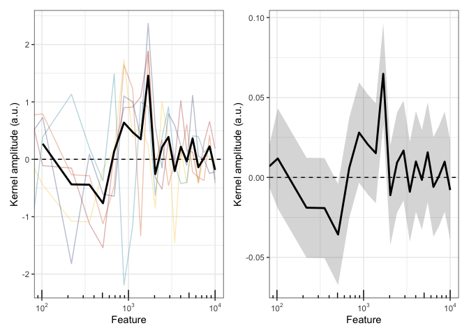
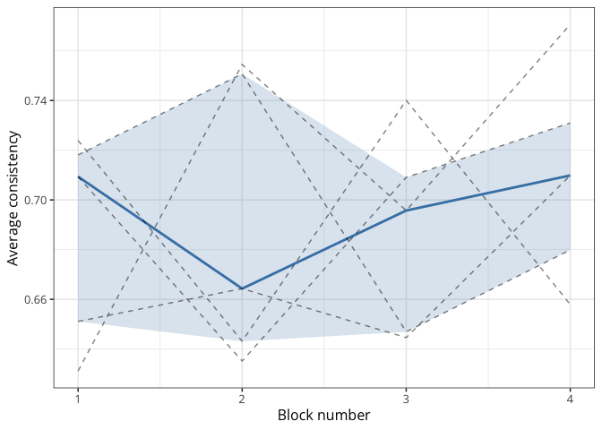

The goal of palin is to provide utilities for working with reverse correlation data. It can be used, for instance, to estimate internal noise (IN) from empirical percentages of agreement (PA) in such tasks.
You can install the development version of palin from GitHub with:
install.packages("remotes")
remotes::install_github(
repo = "https://github.com/neuro-team-femto/palin/r",
dependencies = TRUE
)Below we compute kernels using various methods.
library(patchwork)
library(tidyverse)
library(palin)
# import some reverse correlation data (self-produced speech)
data(self_voice)
head(self_voice)
#> participant block trial response RT feature value
#> 1 01JM 1 1 0 0.298 0.0000 2.175316
#> 2 01JM 1 1 0 0.298 102.2548 -3.567088
#> 3 01JM 1 1 0 0.298 219.4468 -4.296887
#> 4 01JM 1 1 0 0.298 353.7580 1.499065
#> 5 01JM 1 1 0 0.298 507.6892 3.008010
#> 6 01JM 1 1 0 0.298 684.1064 1.302738
# compute the kernel via the difference method
diff_kernels <- computing_kernel(data = self_voice, method = "difference")
head(diff_kernels)
#> participant feature negative positive kernel_gain norm_kernel_gain
#> 1 01JM 0.0000 -0.38232369 0.14785399 0.5301777 0.6834186
#> 2 01JM 102.2548 0.01766484 -0.09270277 -0.1103676 -0.1422679
#> 3 01JM 219.4468 0.16504632 0.01236347 -0.1526829 -0.1968138
#> 4 01JM 353.7580 0.44920329 -0.67440862 -1.1236119 -1.4483773
#> 5 01JM 507.6892 0.71696975 -0.82346385 -1.5404336 -1.9856759
#> 6 01JM 684.1064 0.12811565 0.26302829 0.1349126 0.1739074
# compute the kernel using a GLM
glm_kernels <- computing_kernel(data = self_voice, method = "GLM")
head(glm_kernels)
#> feature kernel lower upper
#> 1 0 0.006920131 -0.006040969 0.019892897
#> 2 102.25480495 0.011869046 -0.019442771 0.043196640
#> 3 219.44681723 -0.018932548 -0.050210661 0.012335792
#> 4 353.7580386 -0.019160194 -0.050435179 0.012104649
#> 5 507.68921389 -0.035676451 -0.067351520 -0.004027084
#> 6 684.10639247 0.006127961 -0.025210484 0.037477517
# plot everything (see the doc via ?plot.kernel)
plot(diff_kernels, normalisation_method = "kernel_gain") +
plot(glm_kernels, normalisation_method = "kernel_gain")
Computing response bias and internal noise from the percentage of agreement.
# filter and reshape the double-pass data
sdt_df <- self_voice |>
filter(participant == unique(participant)[1]) |>
filter(block %in% c(max(block)-1, max(block) ) ) |>
select(-RT, -feature, -value) |>
distinct() |>
# reshape the response variable as indicating stim1 or stim2
mutate(
response = if_else(
condition = first(response) == 0,
true = "stim1",
false = "stim2"
),
.by = c(participant, block, trial)
) |>
mutate(trial = 1:n(), .by = block) |>
pivot_wider(names_from = block, values_from = response) |>
rename("block1" = `4`, "block2" = `5`)
# fit with the SDT model to double-pass responses
sdt_fit <- sdt_fitting(
data = sdt_df,
ntrials = nrow(sdt_df),
loss = "multinomial",
fit_method = "nlminb"
)
# print point estimates with profile-likelihood confidence intervals
sdt_fit$confint
#> parameter estimate lower upper level hits_lower_bound hits_upper_bound
#> 1 bias 0.6652523 0.42 1.08 0.95 FALSE FALSE
#> 2 internal_noise 1.2654512 0.88 2.22 0.95 FALSE FALSE
# fit with the SDT model to double-pass summaries (MSE loss function)
df <- data.frame(
prop_agree = mean(sdt_df$block1 == sdt_df$block2),
prop_first = mean(c(sdt_df$block1 == "stim1", sdt_df$block2 == "stim1") ),
ntrials = 100
)
fit_results <- sdt_fitting(data = df, loss = "mse", maxit = 100)
summary(fit_results)
#>
#> ***** summary of DEoptim object *****
#> best member : 0.66525 1.26545
#> best value : -43.5479
#> after : 100 generations
#> fn evaluated : 2020 times
#> *************************************Fitting the drift diffusion model (DDM) to the responses and distributions of RTs (after removing the last double-pass block).
library(fddm)
# reshape the data
df <- self_voice |>
# keep only the first participant
filter(participant == unique(self_voice$participant)[1]) |>
# remove the last double-pass block
filter(block < max(block) ) |>
# keep only the relevant columns
select(participant, trial, response, RT) |>
# remove duplicated rows
distinct() |>
# reshape the resp variable as indicating int1 or int2
mutate(
resp = if_else(first(response) == 1, 0, 1),
.by = c(participant, trial)
) |>
distinct() |>
# reshape the resp variable
mutate(resp = factor(ifelse(test = response == 0, yes = "lower", no = "upper") ) ) |>
# remove extreme RTs
filter(RT > 0.05 & RT < 2)
# visualise the RT distribution
# hist(df$RT, breaks = "FD")
# fit the full DDM (pars are a, v, t0, w, sv)
# parameters are the threshold separation, drift rate, non-decision time,
# relative starting point, and inter-trial variability of drift rate
# verbose = 20 means that we want to print progress every 20 iterations
ddm_fit <- ddm_fitting(
rt = df$RT,
resp = df$resp,
method = "DEoptim",
maxit = 1e3
)
summary(ddm_fit)
#>
#> ***** summary of DEoptim object *****
#> best member : 0 1.7089 0.01503 0.5 2.17958
#> best value : 585.5875
#> after : 1000 generations
#> fn evaluated : 50050 times
#> *************************************
# compare to the fit with ddm()
fddm_fit <- fddm::ddm(
drift = RT + resp ~ 1,
boundary = ~ 1,
ndt = ~ 1,
bias = ~ 1,
sv = ~ 1,
optim = "nlminb",
args_optim = list(
lo_bds = c(-5, 0, 0, 0, 0),
up_bds = c(+5, 5, 5, 1, 5)
),
data = df
)
# retrieve a summary
fddm_fit$coefficients
#> $drift
#> (Intercept)
#> -1.512902e-06
#>
#> $boundary
#> (Intercept)
#> 1.371041
#>
#> $ndt
#> (Intercept)
#> 0.0243788
#>
#> $bias
#> (Intercept)
#> 0.5000006
#>
#> $sv
#> (Intercept)
#> 0
fddm_fit$loglik
#> [1] -594.7426
# compute average consistency per participant and block
consistency <- response_consistency(
data = self_voice,
method = "calibrated_template",
double_pass = TRUE,
return_by = "block"
)
# plot it
consistency %>%
ggplot(aes(x = block, y = calibrated_prop_agree) ) +
stat_summary(
fun.data = median_hilow,
# display the 50% central quantiles
fun.args = list(conf.int = 0.5),
geom = "ribbon",
fill = "steelblue",
alpha = 0.2
) +
stat_summary(
geom = "line",
fun = median,
linewidth = 1,
colour = "steelblue",
show.legend = FALSE
) +
geom_line(
aes(group = participant),
linewidth = 0.5,
linetype = 2,
alpha = 0.5,
show.legend = FALSE
) +
scale_x_continuous(
breaks = seq(min(consistency$block), max(consistency$block), by = 1)
) +
theme_bw(base_size = 12, base_family = "Open Sans") +
labs(x = "Block number", y = "Average consistency")